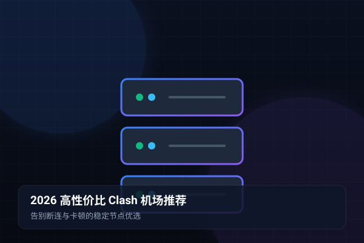

1. 2026 年科学上网环境与机场选购现状
进入 2026 年，国际互联网出口管控与防火墙（GFW）检测算法愈发智能化。以往凭借几台廉价海外 VPS 自建搭建的 Shadowsocks 或 Vmess 节点，往往在敏感时期数小时内就会遭遇阻断或端口封锁。与此同时，市场上充斥着大量以“几块钱一年”为噱头的所谓便宜机场，用户购买后不久便面临频繁卡顿、晚高峰断连甚至服务商“卷款跑路”的惨痛教训。
因此，对于真正需要稳定办公、学术文献检索、外贸商务交流以及高画质流媒体娱乐的用户来说，寻找一家拥有持续运维能力、采用企业级内网专线并且节点 SLA 可用率达到 99.9% 的 安全机场 已经成为刚性需求。
2. IPLC 专线 vs 普通中继：底层架构深度对比
衡量一个 Clash 机场是否优秀的根本标准，在于其骨干网络的接入质量。目前市场上的节点主要分为三大梯队：
| 线路类型 | 网络路径机制 | 晚高峰丢包率 | 敏感时期表现 | 综合评级 |
|---|---|---|---|---|
| 企业内网专线 (IPLC / IEPL) | 境内入口经由物理专线/内网光纤直接穿透至境外机房，不经过 GFW 公网审查。 | < 0.1% (极低) | 不受任何敏感时期与封锁影响，常年稳定如初。 | ⭐⭐⭐⭐⭐ (极力推荐) |
| BGP 优质中继线路 | 国内多线 BGP 节点收集流量，经由公网加密中转隧道发送至境外 VPS。 | 5% ~ 15% (视公网波动) | 偶发端口被嗅探，依赖运维人员动态更换 IP 恢复。 | ⭐⭐⭐⭐☆ (性价比之选) |
| 普通直连线路 (公网直连) | 本地运营商直接经由国际骨干网连接境外服务器，无任何内网加速中继。 | 25% ~ 60% (晚高峰严重) | 封锁最频繁，IP 存活周期往往仅几天，断连常态化。 | ⭐☆☆☆☆ (慎重选择) |
3. 警惕三大陷阱：虚标带宽、测速跑分与跑路风险
新手在挑选梯子工具时，极易被某些低劣服务商的营销套路迷惑：
- 陷阱一：虚标千兆带宽与“测速图神话”。很多商家在 Telegram 群中展示由本地高速测速脚本跑出的所谓“1000Mbps 满速图”。然而这种测试往往发生在深夜空闲时段，且仅针对测速节点。一到晚上 8 点的真实用网高峰，带宽瞬间缩水至不足 5Mbps，看 1080P 都频繁缓冲。
- 陷阱二：无限流量月抛机场。号称“9.9元无限流量”的机场，底层几乎全部超售上百倍。一旦少数用户大流量下载，整条线路立刻拥死，且服务商根本无利可图，通常在收取几轮年付订阅费后便人间蒸发。
- 陷阱三：协议裸奔无数据隔离。廉价机场为了节省成本，往往多名用户共享同一个弱加密隧道，甚至缺乏基础的 DNS 防泄漏与日志清除机制，存在严重的个人隐私隐患。
4. wgetcloud 专线机场综合性能深度实测
作为业内深耕多年的标杆品牌，wgetcloud官网 始终坚持全节点采用纯 IPLC 物理专线传输架构。在长达半年的严苛多地网络实测中，表现出极高的工业级可用性：
1. 全天候超低延迟响应：香港节点内地平均延迟稳定在 16ms~28ms 之间，日本节点维持在 32ms~45ms，无论是打开 Google 搜索、访问 GitHub 代码库还是进行国际视频会议，几乎感觉不到任何代理层带来的阻滞。
2. 晚高峰 4K/8K 零缓冲秒开：即使在晚上 21:00 的全国网络拥堵最高峰，连接 wgetcloud 新加坡或美国专线观看 YouTube 4K 60FPS 测试视频，连接速度持续维持在 120,000 Kbps 以上，拖动进度条即可实现即点即播。
5. 流媒体原生解锁与 ChatGPT/Claude 生产力适配
现代科学上网不仅仅是翻墙浏览网页，更需要应对各种流媒体平台与人工智能平台对数据中心 IP 的严苛封锁：
wgetcloud 部署了遍布全球的原生住宅级 Clean IP 资源，完美实现了对 Netflix、Disney+、HBO Max、YouTube Premium 等主流流媒体的跨区解锁支持。更针对海外 AI 生产力工具（如 OpenAI ChatGPT、Claude 3.5 Sonnet、Midjourney）进行专属路由优化，避免了常见的“Access Denied”或“Cloudflare 无法通过人机验证”报错。
6. 选购高性价比稳定机场的5大黄金原则
总结而言，选购一家能够省心使用一整年的稳定机场，建议牢记以下 5 点：
- 优先选择提供 IPLC / IEPL 专线的品牌：专线不走公网防火墙，是保障全年无感翻墙出海的技术基石。
- 按月付费先验货：坚决不盲目选购不知名新机场的长期多年套餐，先购买月付测试线路稳定性。
- 关注节点复用率与冗余备份：成熟的机场应在单个地区配备至少 4~8 条备用链路，具备故障毫秒级自动切换能力。
- 多终端支持与简单易用：支持一键导入 Clash、Clash Party、Shadowrocket、Sing-box 等多端主流客户端。
- 及时的客户支持：具备工单系统与技术响应能力，确保遇到疑难问题时有人维护。
体验专线极速体验 - 告别卡顿与断连
wgetcloud 提供真正的 IPLC 内网专线与多平台 Clash / Clash Party 智能客户端，晚高峰 4K 视频秒开无压力。
关于本篇主题的常见疑难问题（FAQ）
针对上述教程与实际配置过程中高频出现的网络、规则、测速与订阅问题，我们为您整理了以下专业解答：
因为普通公网中继极易受到跨国骨干网拥塞与防火墙敏感期的深度包检测干扰，经常出现大面积断流。而 IPLC 是由电信运营商提供的端到端内部网络专线，完全避开公网检测，能够做到全年 99.9% 稳定在线。
wgetcloud 支持多设备并发在线，涵盖 Windows 电脑、Mac 笔记本、iPhone、iPad 以及 Android 手机等，非常适合个人多端办公或小型跨境团队共享使用。
首先可以在客户端执行“一键测速”，切换到同地区的其他备用专线节点；其次可检查 Clash 是否提示“订阅更新”，点击更新以获取最新的服务器解析 IP 地址。
由于服务器与跨国专线带宽具有固定的硬成本，廉价机场往往通过数倍乃至数十倍的超额售卖来维持运作，导致晚高峰带宽严重不足，用户实际体验往往极度卡顿。